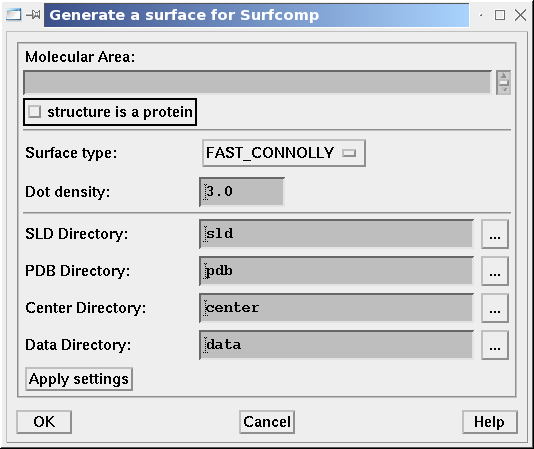

|
In this tutorial you will learn how to use the SPL Surfcomp scripts to generate
molecular surfaces from MOL2 files and setup an experimental database. Finally
you will prepare the shell script to run the calculations and run the surface
comparison search locally.
We assume that you have already started Sybyl 6.91 and initialized the Surfcomp
scripts with
SYBYL> startDuck
-
Generation of the Directory Structure
-
Prepare molecules
-
Generation of the Molecular Surfaces
-
Preparation of the Experiment
-
Tailoring the
run.sh Script
1. Generation of the Directory Structure
For the preparesurfcomp script used in
step 5 the input data must be stored in a special
directory structure. To do this create a new subdirectory in
TUTORIAL_HOME called input. And make this directory
your data directory with the command:
Surfcomp >> Select data directory ...
select TUTORIAL_HOME/input
Now the directories are ready to store the molecular surface information
generated in the next steps. What is stored in which directory is described in
the preparesurfcomp man page except
for the mol2 directory which will contain the tutorial data and
other files generated by Sybyl.
2. Prepare Molecules
Download the tutorial data
sybyl_ligand_data.tar.gz and unpack its contents in the
input/mol2 directory. This provides you with the MOL2 structure
files of 8 thermolysin inhibitors taken from the receptor/ligand complexes. We
will now generate a Sybyl database that contains all this files to make the
surface generation process faster.
-
Create a new database in the
input/mol2 directory:
SYBYL> database create mol2/thermolysin.mdb
-
Add all 8 structures into the database. For that you can use any SPL scripts
or Sybyl commands available in your installation, but let's show the manual
way here, since it works always:
SYBYL> MOL2 IN M1 mol2/1THL.mol2
SYBYL> DATABASE ADD M1
Repeat these commands for 1TLP.mol2, 1TMN.mol2,
3TMN.mol2, 4TMN.mol2, 5TLN.mol2,
5TMN.mol2 and 6TMN.mol2.
-
You can now look on the structures if you get them from the database:
File >> Database >> Get Molecule ...
and select the desired molecule from the list.
The structure files are now prepared and we can proceed with the next step.
3. Generation of the Molecular Surfaces
We will now generate the surfaces for the whole database, based on a predefined
generation scheme.
-
Open the surface generation dialog:
Surfcomp >> Generate Surface ...
-
In the dialog
change Surface type to Fast Connolly
uncheck 'structure is a protein'

Figure 3.1: The surface generation dialog with standard settings for small
molecules
press Apply settings
leave the dialog by Cancel
The Surfcomp scripts are now prepared to generate the surfaces according to
the settings you specified in the dialog. Note that you have to change and
apply the settings in the surface generation dialog whenever you want to
generate new surfaces for your database.
-
Now it is time to process all structures in the database invoke
Surfcomp >> Surface for DB
specify the database (mol2/thermolysin.mol2)
choose 'READ ONLY'.
This will generate all the surfaces for the molecules in the database and
place them into the directory input/sld. The surface data will
be placed in the input/data directory and the own-format
surface files in input/own.
The surfaces are now generated for all files in the database. You can look at
them if you invoke the MOLCAD interface of sybyl and read the files from the
input/sld directory.
4. Preparation of the Experiment
The last step in the preparation protocol is the creation of the experiment
database and the shell script that can be used to invoke the calculation. For
that purpose you can use the preparesurfcomp script which examines
the input directory and builds the database for the experiment and
a shell-script which you can use to start the calculation.
You will now invoke the script in a way to setup an experiment for each possible
pair of surfaces. This will create 28 experiments which can be executed by the
generated shell script. In the Sybyl Proteins
tutorial you can find a way to produce experiments for each pair of site spheres
defined on your surfaces.
preparesurfcomp is invoked once for each input directory and needs
information about the database server, the database user ID and password, the
name of the experiment group and the size of the surface patches in the surface
comparison run. So when you change to the TUTORIAL_HOME directory
and type
% preparesurfcomp -h MYSQL_SERVER -u
MYSQL_USERID --path=input -g sybyl_ligands_tut
-f -r 3.8
an experiment database with the name sybyl_ligands_tut should be
created on the MYSQL_SERVER using the user
MYSQL_USERID. (If the MYSQL_USERID
is password protected, you have to give the additional option flag
-p. The script will then prompt for a password.)
The -f parameter tells the script to generate a full surface
comparison for each pair of surfaces besides the comparisons for each pair of
active sites.
If you search the current directory you will now find a shell script called
run.sh this script starts the surface similarity search for all
experiments in the group. In the next step you will learn how
this file has to be modified to fit to your needs.
5. Tailoring the run.sh Script
If you take a look at the run script it contains a lot of variables, which
control the surface similarity search. The important parameters are summarized
in two blocks:
-
The filtering parameters:
CPCUTOFF=1
RLEVEL=0.6
FUZZYTOL=0.3
MINDIST=0.5
TOLERANCE=1.0
ANGLE=15
They are described in detail in
[1,
2].
(In a first guess you can always use the default values.
They will give you good results in most of the cases or a first hint where to
start tailoring.
-
The data columns:
These three variables specify which columns in the surface data files should
be taken for the
-
critical point detection
CPCOL
-
harmonic shape image comparison
HSICOL
-
fuzzy filtering
FUZZYCOL.
The columns are specified as bitvectors so that multiple selections of columns
are possible. For each selected column i, the corresponding bit
i must be set. To find the right values for the columns look at
the header of one of the data files in TUTORIAL_HOME/input/data
and set the variables as follows:
-
The critical point detection needs always the two canonical curvatures
(lc_1.0_1 and lc_1.0_2), so set
CPCOL=12 (column 2 + 3 =
22 + 23 = 12).
-
For the harmonic shape image comparison a shape property is needed. You
can use the lc_1.0 property, so set
HSICOL=16 (column 4 =
24 = 16)
-
To successfully perform a chemical prescreening, the fuzzy filer needs a
chemical surface property. The only one available in our example is the
ESP (ep), so set
FUZZYCOL=1 (column 0 = 20 = 1)
Finally the two blocks of variables in your run.sh script should look
like:
CPCUTOFF=2
RLEVEL=0.6
FUZZYTOL=0.3
MINDIST=0.5
TOLERANCE=1.0
ANGLE=15
CPCOL=12
FUZZYCOL=16
DUCKCOL=1
If you know invoke the script it will start the surfcomp program
which will produce a set of files starting with
esp_<SURFACE A>-<SURFACE A>
with the results stored in
esp_<SURFACE A>-<SURFACE A>.xml
. |